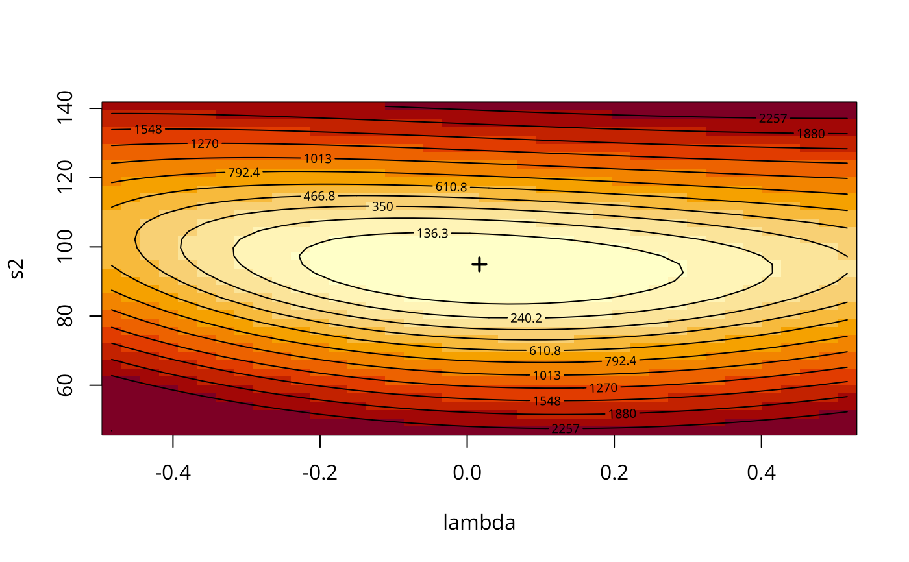

gstsls.RdAn implementation of Kelejian and Prucha's generalised moments estimator for the autoregressive parameter in a spatial model with a spatially lagged dependent variable.
gstsls(formula, data = list(), listw, listw2 = NULL, na.action = na.fail,
zero.policy = attr(listw, "zero.policy"), pars=NULL, scaleU=FALSE, control = list(),
verbose=NULL, method="nlminb", robust=FALSE, legacy=FALSE, W2X=TRUE)
# S3 method for Gmsar
impacts(obj, ..., n = NULL, tr = NULL, R = NULL,
listw = NULL, evalues=NULL, tol = 1e-06, empirical = FALSE, Q=NULL)a symbolic description of the model to be fit. The details
of model specification are given for lm()
an optional data frame containing the variables in the model. By default the variables are taken from the environment which the function is called.
a listw object created for example by nb2listw
a listw object created for example by nb2listw, if not given, set to the same spatial weights as the listw argument
a function (default na.fail), can also be na.omit or na.exclude with consequences for residuals and fitted values - in these cases the weights list will be subsetted to remove NAs in the data. It may be necessary to set zero.policy to TRUE because this subsetting may create no-neighbour observations. Note that only weights lists created without using the glist argument to nb2listw may be subsetted.
default NULL, use global option value; if TRUE assign zero to the lagged value of zones without
neighbours, if FALSE (default) assign NA - causing GMerrorsar() to terminate with an error
starting values for \(\lambda\) and \(\sigma^2\) for GMM optimisation, if missing (default), approximated from initial 2sls model as the autocorrelation coefficient corrected for weights style and model sigma squared
Default FALSE: scale the OLS residuals before computing the moment matrices; only used if the pars argument is missing
A list of control parameters. See details in optim or nlminb
default NULL, use global option value; if TRUE, reports function values during optimization.
default nlminb, or optionally a method passed to optim to use an alternative optimizer
see stsls
see stsls
see stsls
A spatial regression object created by lagsarlm, lagmess or by lmSLX; in HPDinterval.LagImpact, a LagImpact object
Arguments passed through to methods in the coda package
A vector of traces of powers of the spatial weights matrix created using trW, for approximate impact measures; if not given, listw must be given for exact measures (for small to moderate spatial weights matrices); the traces must be for the same spatial weights as were used in fitting the spatial regression, and must be row-standardised
vector of eigenvalues of spatial weights matrix for impacts calculations
If given, simulations are used to compute distributions for the impact measures, returned as mcmc objects; the objects are used for convenience but are not output by an MCMC process
Argument passed to mvrnorm: tolerance (relative to largest variance) for numerical lack of positive-definiteness in the coefficient covariance matrix
Argument passed to mvrnorm (default FALSE): if true, the coefficients and their covariance matrix specify the empirical not population mean and covariance matrix
default NULL, else an integer number of cumulative power series impacts to calculate if tr is given
defaults to length(obj$residuals); in the method for Gmsar objects it may be used in panel settings to compute the impacts for cross-sectional weights only, suggested by Angela Parenti
When the control list is set with care, the function will converge to values close to the ML estimator without requiring computation of the Jacobian, the most resource-intensive part of ML estimation.
A list object of class Gmsar
simultaneous autoregressive error coefficient
GMM coefficient estimates (including the spatial autocorrelation coefficient)
GMM coefficient standard errors
GMM residual variance
sum of squared GMM errors
number of parameters estimated
NULL
the call used to create this object
GMM residuals
NULL
Difference between residuals and response variable
model formula
NULL
zero.policy for this model
NULL
list of internal bigG and litg components for testing optimisation surface
object returned by optimizer
start parameter values for optimisation
NULL
(possibly) named vector of excluded or omitted observations if non-default na.action argument used
Kelejian, H. H., and Prucha, I. R., 1999. A Generalized Moments Estimator for the Autoregressive Parameter in a Spatial Model. International Economic Review, 40, pp. 509--533; Cressie, N. A. C. 1993 Statistics for spatial data, Wiley, New York.
Roger Bivand, Gianfranco Piras (2015). Comparing Implementations of Estimation Methods for Spatial Econometrics. Journal of Statistical Software, 63(18), 1-36. doi:10.18637/jss.v063.i18 .
#require("spdep", quietly=TRUE)
data(oldcol, package="spdep")
COL.errW.GM <- gstsls(CRIME ~ INC + HOVAL, data=COL.OLD, spdep::nb2listw(COL.nb, style="W"))
summary(COL.errW.GM)
#>
#> Call:
#> gstsls(formula = CRIME ~ INC + HOVAL, data = COL.OLD, listw = spdep::nb2listw(COL.nb,
#> style = "W"))
#>
#> Residuals:
#> Min 1Q Median 3Q Max
#> -37.87710 -5.74981 -0.21447 6.19490 22.85527
#>
#> Type: GM SARAR estimator
#> Coefficients: (GM standard errors)
#> Estimate Std. Error z value Pr(>|z|)
#> Rho_Wy 0.454171 0.185680 2.4460 0.01445
#> (Intercept) 43.782818 10.923192 4.0082 6.117e-05
#> INC -0.994831 0.382774 -2.5990 0.00935
#> HOVAL -0.267076 0.091984 -2.9035 0.00369
#>
#> Lambda: 0.016647
#> Residual variance (sigma squared): 103.36, (sigma: 10.167)
#> GM argmin sigma squared: 93.729
#> Number of observations: 49
#> Number of parameters estimated: 6
#>
aa <- GMargminImage(COL.errW.GM)
levs <- quantile(aa$z, seq(0, 1, 1/12))
image(aa, breaks=levs, xlab="lambda", ylab="s2")
points(COL.errW.GM$lambda, COL.errW.GM$s2, pch=3, lwd=2)
contour(aa, levels=signif(levs, 4), add=TRUE)

COL.errW.GM <- gstsls(CRIME ~ INC + HOVAL, data=COL.OLD,
spdep::nb2listw(COL.nb, style="W"), scaleU=TRUE)
summary(COL.errW.GM)
#>
#> Call:
#> gstsls(formula = CRIME ~ INC + HOVAL, data = COL.OLD, listw = spdep::nb2listw(COL.nb,
#> style = "W"), scaleU = TRUE)
#>
#> Residuals:
#> Min 1Q Median 3Q Max
#> -37.87710 -5.74981 -0.21447 6.19490 22.85527
#>
#> Type: GM SARAR estimator
#> Coefficients: (GM standard errors)
#> Estimate Std. Error z value Pr(>|z|)
#> Rho_Wy 0.454171 0.185680 2.4460 0.01445
#> (Intercept) 43.782818 10.923192 4.0082 6.117e-05
#> INC -0.994831 0.382774 -2.5990 0.00935
#> HOVAL -0.267076 0.091984 -2.9035 0.00369
#>
#> Lambda: 0.016647
#> Residual variance (sigma squared): 103.36, (sigma: 10.167)
#> (scaled) GM argmin sigma squared: 0.96653
#> Number of observations: 49
#> Number of parameters estimated: 6
#>
listw <- spdep::nb2listw(COL.nb)
W <- as(listw, "CsparseMatrix")
trMat <- trW(W, type="mult")
impacts(COL.errW.GM, tr=trMat)
#> Impact measures (lag, trace):
#> Direct Indirect Total
#> INC -1.0543769 -0.7682309 -1.8226078
#> HOVAL -0.2830618 -0.2062420 -0.4893038